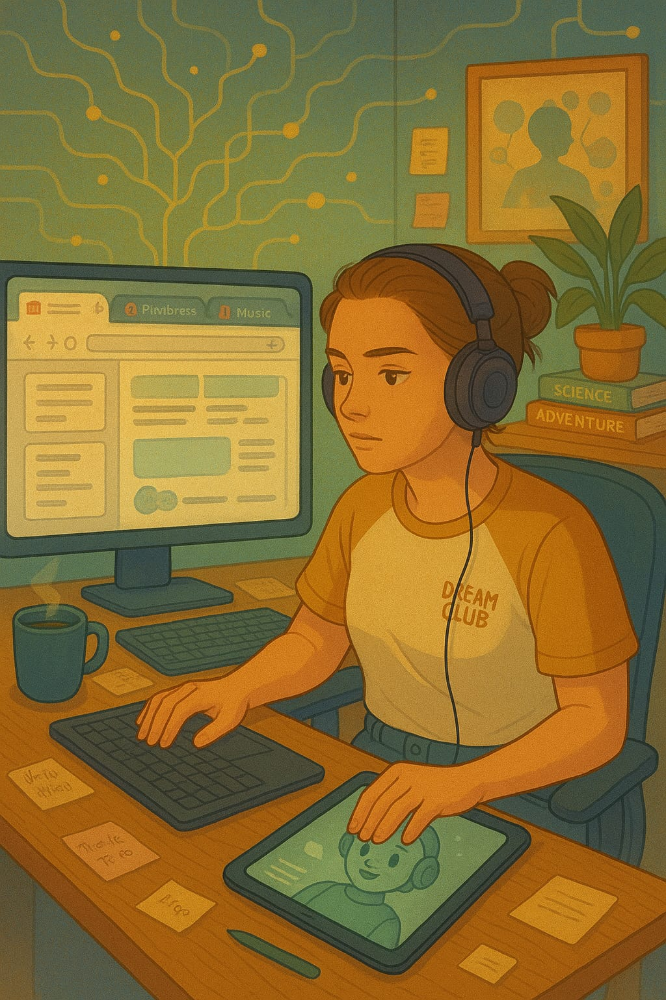

Uma Semana de Foco Total
Hoje tirei a tarde para estudar e me organizar para a tutoria.
Consegui acompanhar a tutoria do início ao fim e me senti muito feliz.
Consegui interagir e acompanhar tudo e, o melhor, consegui entender.
Bem vindo, me chamo Sabrina e estou em transição de carreira para área tech, este é meu primeiro projeto.
Venha acompanhar comigo essa jornada de uma millenium TDAH se aventurando na programação.
Hoje tirei a tarde para estudar e me organizar para a tutoria.
Consegui acompanhar a tutoria do início ao fim e me senti muito feliz.
Consegui interagir e acompanhar tudo e, o melhor, consegui entender.
No começo foi muito difícil, não entendia nada e não conseguia acompanhar.
Usei IAs e procurei estudar por conta. Com algumas estratégias agora consigo acompanhar.
Tirei as distrações, coloquei som de fundo, iniciei medicação para TDAH e agora estou muito melhor.
Hoje o professor nos ensinou a usar Gitbash.
Interagi bastante na aula e me senti à vontade, consegui acompanhar tudo e estou bem feliz.
Me senti uma programadora de verdade.
Hoje configuramos e subimos um projetinho pro GitHub.
Me perdi várias vezes e precisei pedir ajuda.
Tive que compartilhar minha tela duas vezes e eu fiquei com bastante vergonha, mas no fim deu certo.
Infelizmente não consegui finalizar por conta do tempo, mas adorei a aula.
Desde que comecei a usar, tem se tornado um pesadelo.
Já subi 3 projetos lá e é sempre uma dor de cabeça.
Uma hora eu aprendo a usar kkkk.
Hoje tirei o dia de folga.
Passei pelo centro dar uma volta.
Afinal, sou gente né? Deixa aproveitar antes de enlouquecer na programação.
Hoje tirei o dia para terminar o projeto do diário.
Codar, escrever, formatar... Bora entregar algo lindo!
Já pensei em ir pro UX design, porque sou chata na parte estética, mas essas letrinhas na tela me encantam mais.
Sábado é dia de curtir festa julina da minha pequena.
Domingo está nos planos revisar tudo até o momento para iniciar a semana com tudo.
FOCO TOTAL!